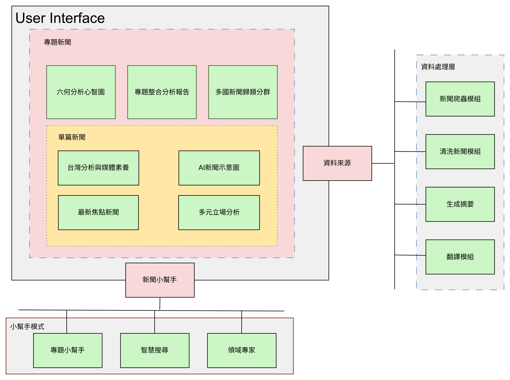

AIversity
以大語言模型建構多視角與深度分析之新一代新聞媒體
國立高雄大學 資訊工程學系
林柏諺、李憲昌、何皓宇、宋暐竣
1. 摘要
AIversity 運用 LLM 打造全方位新聞平台，解決現代人資訊破碎、同溫層與語言障礙三大難題。透過 AI 綜合報導、六何心智圖與正反觀點分析，協助讀者快速掌握事件全貌並打破偏見。結合互動問答與多語翻譯，實現跨越國界的深度閱讀體驗。
2. 系統架構

3. 現有平台 V.S. AIversity
| 挑戰 | 現有新聞平台 | AIversity |
|---|---|---|
| 資訊破碎化 | 資訊分散，使用者自行篩選 | LLM 生成整合多來源的單篇新聞 |
| 同溫層效應 | 演算法放大同質內容，限制多元化 | 多元立場分析，主動呈現多種觀點 |
| 語言與文化屏障 | 內容受限於單一語種 | 整合外語來源，支援多語系版本 |
4. 核心功能展示